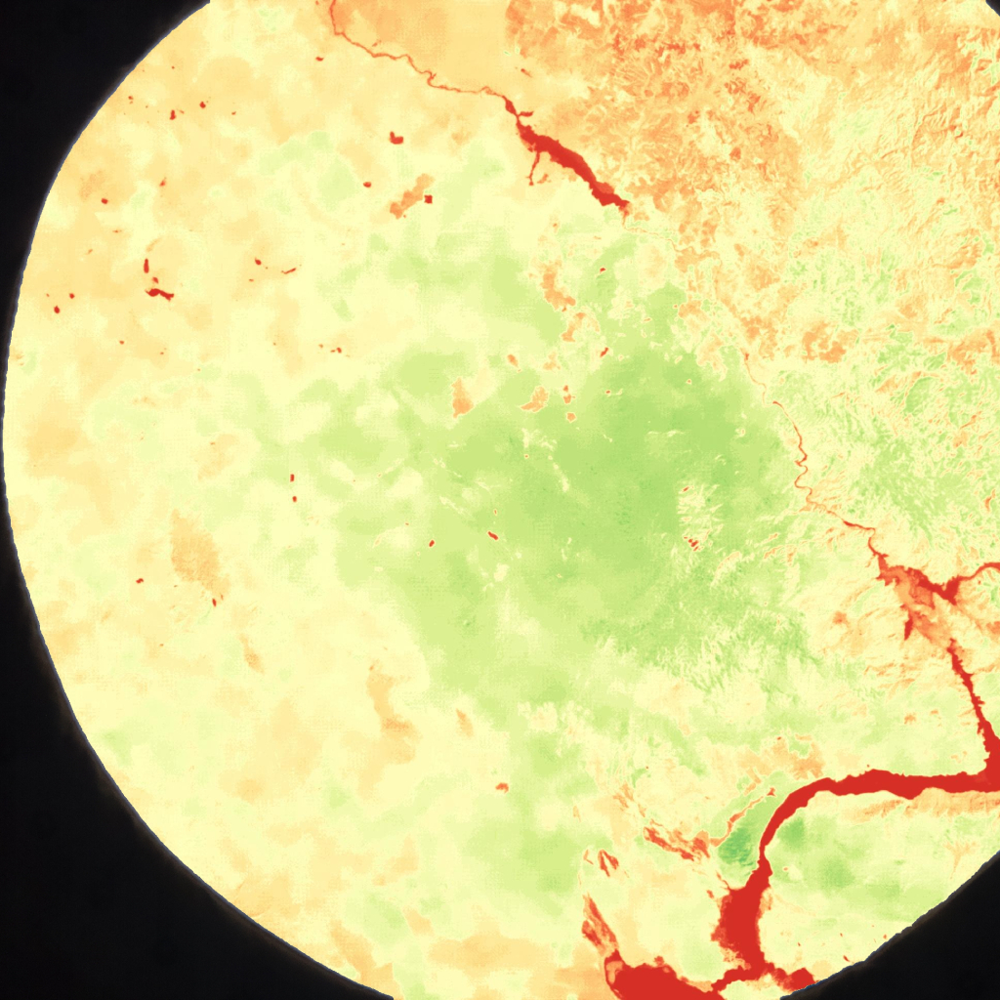

ESA Astro Pi
Tools/Technologies
- Python
- HTML + CSS
- JavaScript
Description
Our team Pardubice Pi was marked as one of the TOP 10 of all 523 international teams from the Astro Pi competition. We wrote a code to take images of Earth from the ISS and we used the obtained photos to identify the loss of vegetation. I was responsible for the mission design, data processing in Python and the development of a data visualisation tool in JavaScript.